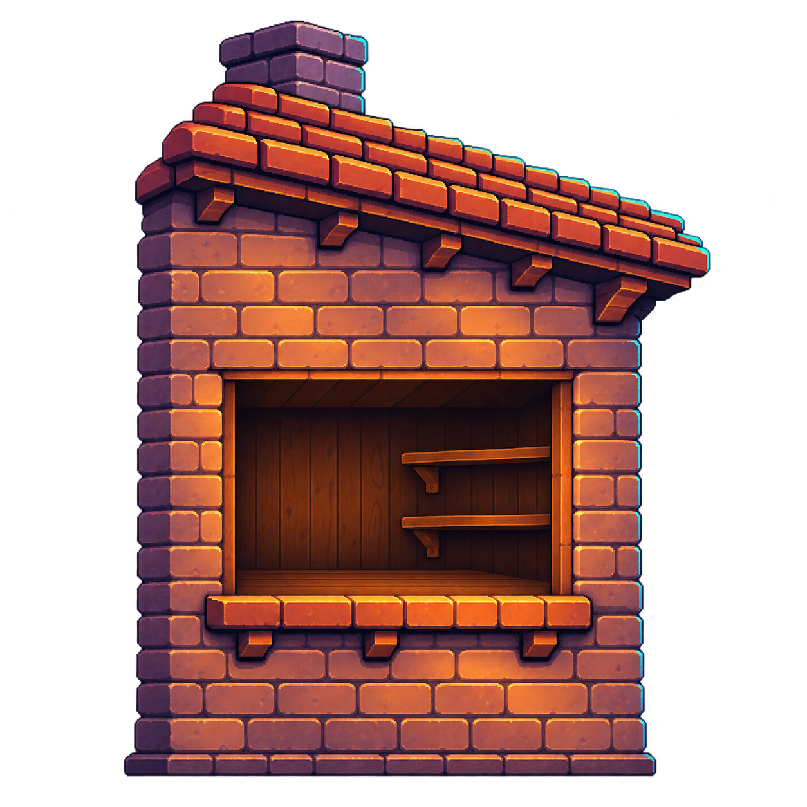

ART STUDY / WORKSHOP
Original start screen ↗Keep the character. Separate the pieces.
Approved reference beside the assembled layers. Static art review before motion.
Approved direction
Layered assembly
Inspect a layer
Toggle any piece, adjust placement, or export it.
View the source assets

Loading transparent assets…
Generated raster source art, separated into editable placements. Existing baked shading is retained; this is not yet a fully relightable production tileset. Original site and intro unchanged.